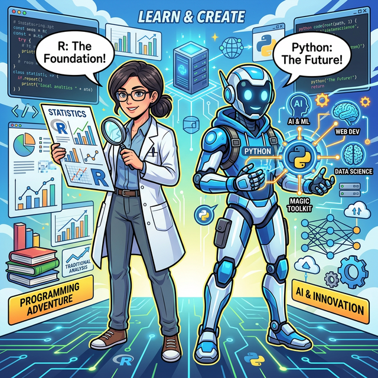
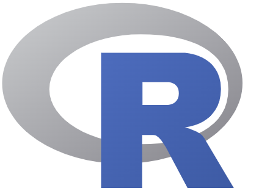
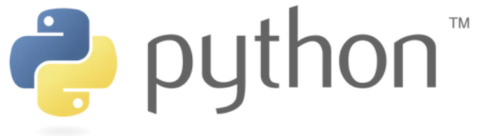
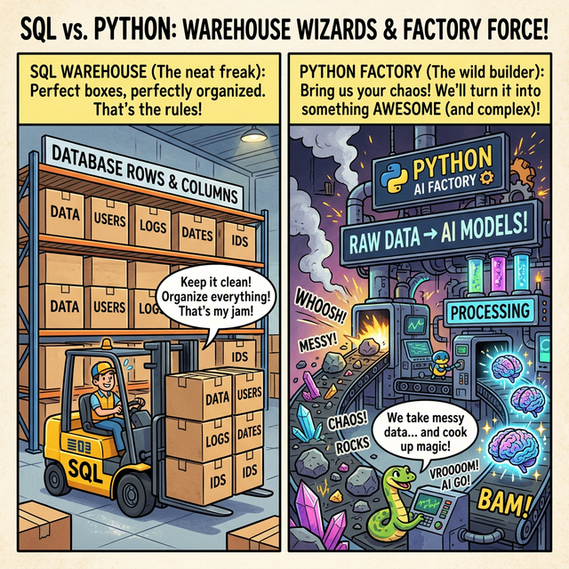
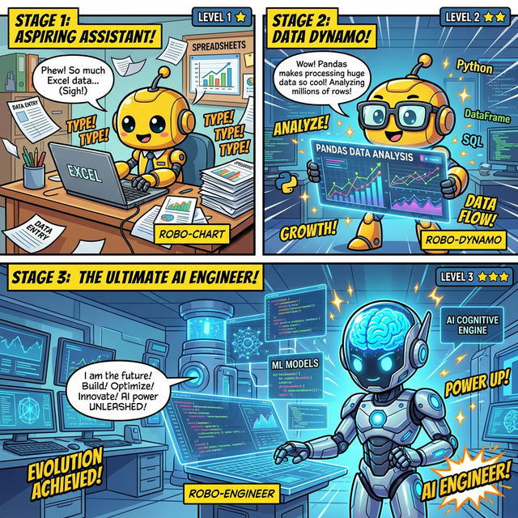
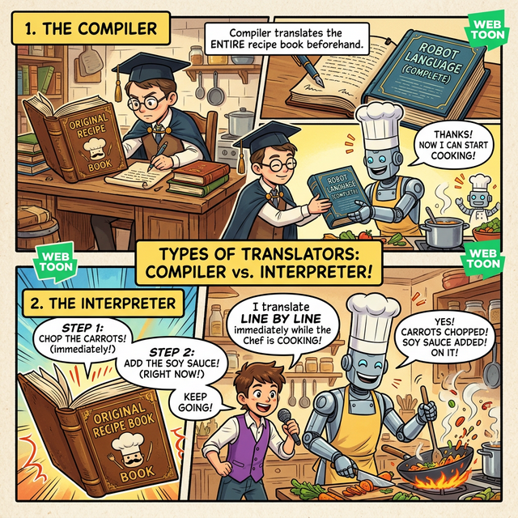

1주차 1세션: 파이썬 소개 및 인터프리터 원리 🚀
시스템 개발 언어 vs 데이터 분석 언어
개발 언어의 이중성: 시스템 vs 데이터
프로그래밍 언어는 목적에 따라 크게 시스템/애플리케이션 구축용 언어와 데이터 분석/통계용 언어로 나눌 수 있습니다. 이들의 특징을 파악하는 것은 파이썬의 위치를 이해하는 첫걸음입니다.

(R은 엄격한 통계학자, 파이썬은 유연한 AI 탐험가에 비유됩니다.)일반 개발 언어 (Java, C++, C#)
- 주목적: “무엇을 만들 것인가?” (Build & Engineering)
- 특징:
- 대규모 시스템의 안정성, 보안, 연산 속도, 그리고 장기적인 유지보수성이 최우선입니다.
- 엄격한 문법(정적 타이핑 등)과 복잡한 설계 구조(객체지향 설계 패턴 등)를 요구합니다.
- 비유: 자동차를 처음부터 끝까지 직접 조립하는 엔지니어의 정밀한 도구 (도면, 용접기, 프레스 등).
데이터 분석 언어 (Python, R, SQL)
- 주목적: “데이터에서 무엇을 발견할 것인가?” (Insights & Discovery)
- 특징:
- 방대한 데이터를 빠르게 로드하고, 가공(전처리)하며, 직관적으로 시각화하는 능력이 최우선입니다.
- 문법이 상대적으로 유연하고 읽기 쉬우며, 코드를 한 줄씩 실행하며 결과를 즉시 확인하는 대화형(Interactive) 환경에 최적화되어 있습니다.
- 비유: 자동차를 타고 지형을 파악하며 목적지를 찾아가는 네비게이터의 도구 (지도, 나침반, GPS 분석기).
데이터 분석의 양대 산맥: Python vs R
Python과 R의 기원과 생태계
데이터 과학 입문자들이 가장 많이 던지는 첫 질문은 단연코 “파이썬과 R 중 무엇을 배워야 하나요?” 입니다. 두 언어의 기원과 생태계를 이해하면 답이 명확해집니다. R은 통계학자들이, 파이썬은 범용 소프트웨어 개발을 목적으로 창시되었습니다.
R 언어: 통계학자의 피가 흐르는 언어
- 탄생 배경: 뉴질랜드 오클랜드 대학의 통계학자들이 철저히 ‘통계 컴퓨팅과 데이터 분석’만을 위해 고안한 전문 언어입니다.
- 장점: 역사가 깊은 만큼 통계 패키지 생태계가 막강하며,
ggplot2와 같은 라이브러리를 통해 논문에 바로 실을 수 있는 극도로 정교하고 아름다운 시각화 결과물을 만들어 냅니다.

R 언어의 명확한 한계: 범용성 부족
R은 통계 연구에는 환상적이지만, 일반적인 웹서버 개발이나 알고리즘 문제 해결, 상용 서비스로의 통합 등 프로그래밍 범용성이 크게 떨어집니다. 또한 딥러닝과 머신러닝의 혁신적인 최신 기술 생태계는 대부분 파이썬을 중심으로 돌아가고 있습니다.
파이썬 (Python): 범용성과 AI의 만능열쇠
- 탄생 배경: 귀도 반 로섬(Guido van Rossum)이 “코드의 가독성”을 제1원칙으로 삼아 창시한 다목적 범용 프로그래밍 언어입니다.
- 장점:
- 무한한 범용성: 데이터 분석을 넘어 웹 크롤링, API 앱 서버 개발, 수동 업무 자동화, 게임 빌드 등 한계가 없습니다.
- 압도적인 AI 생태계: 구글의 텐서플로우(TensorFlow), 메타의 파이토치(PyTorch) 등 전 세계 딥러닝 프레임워크의 절대적 표준 언어입니다.

접착제 언어 (Glue Language)의 연산 속도 비밀
파이썬은 자체 실행 속도가 느리다는 비판을 받지만, C/C++로 구현된 무거운 고성능 연산 모듈을 겉에서 감싸 제어하는 ‘접착제 역할’을 훌륭히 수행합니다. CPU나 GPU 리소스를 극한으로 쥐어짜는 핵심 계산은 C 언어가 하고, 개발자는 다루기 쉬운 파이썬 껍데기 코드로 이를 조종합니다.
R vs Python 요약 비교
R과 파이썬의 차이점은 다음의 비교표로 정리할 수 있습니다.
| 구분 | R (알) | Python (파이썬) |
|---|---|---|
| 태생/목적 | 통계 모델링 전용 언어 | 다목적 범용 프로그래밍 언어 |
| 주요 사용자군 | 학계 연구원, 전문 통계학자 | 소프트웨어 개발자, 데이터 과학자, AI/ML 엔지니어 |
| 절대적 강점 | 심도 깊은 통계 분석 및 추론, 논문용 정교한 시각화 | 머신러닝/딥러닝 파이프라인, 웹 백엔드 구축, 업무 자동화 |
| 산업계 트렌드 | 아카데미 및 통계 랩실에서 여전한 강세 | 글로벌 최고 IT 기업 및 산업계 실무 표준 (압도적 채택) |
데이터 분석 도구의 한계: SQL을 넘어 파이썬으로
SQL의 역할과 한계
데이터 분석의 첫걸음으로 엑셀(Excel)만큼이나 많이 배우는 것이 바로 SQL(구조화된 질의어)을 이용한 관계형 데이터베이스(RDBMS) 다루기입니다. SQL은 창고에 차곡차곡 예쁘게 정리된 정형 데이터를 빠르고 정확하게 조건에 맞춰 추출해 내는 데 완벽한 성능을 자랑합니다. 하지만 정형화된 데이터베이스에만 갇혀 있어야 합니다.
비정형 데이터 처리에서 SQL의 한계
- SQL의 한계: 관계형 데이터베이스는 엑셀처럼 표(Table) 형태로 각인된 정형 데이터만 다룰 수 있습니다.
- 파이썬의 강점: 폭발하는 빅데이터의 80% 이상은 웹페이지 텍스트, SNS 댓글, 이미지, 각종 센서 로그 등 비정형 데이터입니다. 파이썬은 풍부한 크롤링(웹 수집) 라이브러리와 텍스트 마이닝 도구를 통해 이 거친 원석들을 손쉽게 긁어모으고, 분석 가능한 정형 데이터로 깔끔하게 가공(전처리)할 수 있습니다.
통계적 연산과 예측 모델링의 한계
- SQL의 한계: 단순한 덧셈, 그룹별 평균 정도는 훌륭히 수행하지만, 복잡한 선형 대수 행렬 연산이나 미래를 예측하는 통계적 모델링을 쿼리문으로 짜는 것은 거의 불가능에 가깝습니다.
- 파이썬의 강점: 파이썬은
Numpy,Scipy,Scikit-learn과 같은 기계학습/데이터 과학 전용 라이브러리를 통해 과거의 데이터를 학습시켜 미래를 예측하는 지도/비지도 학습 알고리즘을 단 몇 줄의 코드로 우아하게 구현해 냅니다.
데이터 파이프라인의 통합 자동화
- SQL의 한계: 목적에 맞는 데이터를 추출해 내는 일회성 질의나 대시보드 연동에는 매우 강하지만, 수만 개의 파일 변경을 추적하거나 외부 네트워크 서버에서 데이터를 실시간으로 가져오는 등의 시스템 프로그래밍은 어렵습니다.
- 파이썬의 강점: 외부 API로 데이터를 받아오고 -> SQL에 접속해 기존 정보를 합치고 -> 딥러닝 예측 모델을 돌린 뒤 -> 결과 그래프를 그려 담당자에게 매일 이메일로 자동 발송하는 ‘A to Z 통합 워크플로우’를 처음부터 끝까지 혼자서 묶어낼 수 있는 초강력 접착제입니다.
SQL 지게차와 파이썬 만능 공장의 비유
SQL이 거대한 창고에서 원하는 물건 박스를 오차 없이 빨리 찾아오는 ‘지게차’라면, 파이썬은 창고 밖의 거친 재료들을 직접 캐내고, 다듬고, 조립하여 완전히 새로운 AI 인공지능 예측 모델을 찍어내는 ‘종합 만능 공장’이라고 할 수 있습니다.

(SQL 지게차가 정형화된 상자를 정리하는 동안, 파이썬 공장은 거친 데이터 원석을 받아들여 빛나는 인공지능 두뇌로 변환시키고 있습니다.)우리는 왜 파이썬을 선택했는가?
파이썬 학습의 3단계 로드맵
우리가 파이썬을 학습하는 이유는 무한한 발전 가능성을 제한하지 않기 때문입니다. 파이썬을 마스터하는 3단계 마일스톤을 통해 한계 없는 기술 도약이 보장됩니다.

(1단계: 엑셀 서기 로봇 ➡️ 2단계: 데이터 차트를 든 판다스 분석가 ➡️ 3단계: 빛나는 두뇌를 가진 궁극의 AI 엔지니어 로봇으로 진화!)1단계: 업무 자동화와 엑셀의 한계 돌파
초급 문법을 깨우치는 순간, 여러분은 반복적인 수백 장의 엑셀 데이터 취합이나 수만 장의 폴더 내 파일명 자동 변경, 매일 아침 웹사이트의 헤드라인 기사를 긁어오는 작업(크롤링 매크로)을 단 몇 줄의 코드로 자동화할 수 있습니다. 파이썬은 지치지 않고 여러분의 업무를 대신 처리해 줄 ‘충직한 개인 디지털 비서’가 되어 줍니다.
2단계: 빅데이터 분석가로의 진화
그다음 기초 구문을 기반으로 Pandas(판다스)와 NumPy(넘파이) 패키지를 장착합니다. 더 이상 엑셀이 감당하지 못해 멈춰버리는 수천만 행짜리 거대한 로그 데이터를 단 1~2초 만에 시스템 메모리로 불러와 정제하고, 결합하고, 슬라이싱할 수 있습니다. 나아가 Matplotlib과 Seaborn을 통해 도출된 통계적 인사이트를 경영진이 한눈에 알아볼 수 있는 전문적이고 직관적인 차트로 시각화합니다.
3단계: 인공지능(AI) 엔지니어의 길
훗날 데이터를 다루는 것에 익숙해져, ChatGPT 브레인이나 알파고의 핵심 동작 원리인 머신러닝과 딥러닝 모델링에 호기심이 생겼을 때, 여러분이 파이썬을 이미 쥐고 있다면 어떠한 진입 장벽이나 언어 변환의 스트레스 없이 즉각적으로 세계 최고 수준의 AI 프레임워크를 가져와 활용할 수 있습니다.
파이썬 창시자와 철학
자비로운 종신 독재자: 귀도 반 로섬
파이썬은 네덜란드 출신의 컴퓨터 프로그래머 귀도 반 로섬(Guido van Rossum)이 1989년 크리스마스 연휴에 취미 삼아 만들기 시작한 언어입니다. 그는 영국의 코미디 프로그램인 ‘몬티 파이썬의 날아다니는 서커스’의 골수팬이었는데, 여기서 이름을 따와 언어의 이름을 ‘파이썬(Python)’이라고 지었습니다.
(파이썬의 창시자, 귀도 반 로섬)
파이썬의 철학: Zen of Python
파이썬의 핵심 철학은 “읽기 쉽고, 누구나 작성하기 쉬운 코드를 지향한다”는 것입니다. 파이썬의 터미널에 import this를 입력하면 파이썬의 철학을 담은 19가지 격언인 ‘Zen of Python’이 출력됩니다.
아름다운 것이 추한 것보다 낫고 (Beautiful is better than ugly) 명확한 것이 함축적인 것보다 낫다 (Explicit is better than implicit) 가독성은 매우 중요하다 (Readability counts)
Java vs Python 비교
컴파일러 vs 인터프리터 동작 방식
자바를 이미 학습한 여러분에게 파이썬의 실행 방식은 다소 생소할 수 있습니다.

(컴파일러는 책 한 권을 몽땅 번역한 뒤에 요리를 시작하지만, 인터프리터는 옆에서 한 줄씩 실시간으로 읽어주며 스피디하게 요리를 진행합니다!)- Java (컴파일러 방식):
javac번역가가 책(코드) 전체를 한 번에 검사해서 완벽한 기계어 쪽지(.class바이트코드)로 싹 다 번역해 놓습니다. - Python (인터프리터 방식): 친절하고 빠른 통역가가 코드를 한 줄씩 읽어 들이는 즉시 통역해서 바로바로 요리사 컴퓨터에게 명령을 내립니다.
🚨 자바 개발자 주의점!: 자바는 문법 오타가 있으면 아예 실행이 차단되지만, 파이썬은 일단 위에서부터 잘 실행되다가 에러가 난 오타 줄에 직면해서야 비로소 프로그램이 갑자기 멈추게 됩니다. 이처럼 실행 중간에 폭발하는 런타임 에러(Runtime Error)에 주의해야 합니다.
정적 타이핑 vs 동적 타이핑
- Java: 변수를 만들 때 무조건 자료형을 명시해야 합니다.
int age = 25; - Python: 자료형을 굳이 적지 않아도 알아서 판단합니다.
age = 25
1세션 마무리
1세션 코딩 영단어
Interpreter: 통역사. (파이썬처럼 코드를 한 줄씩 바로바로 해석해서 실행해 주는 프로그램 환경을 뜻합니다.)Literal: 글자 그대로의. (코드에25혹은"Hello"라고 ‘직접 적어놓은 고정된 값’ 그 자체를 말합니다.)Constant: 끊임없는, 불변의. (한 번 값을 담으면 프로그램이 끝날 때까지 ‘절대 변하지 않기로 약속한 그릇(변수)’을 말합니다.)
1세션 Vibe Coding
🗣️ 학생 프롬프트 (AI에게 이렇게 명령해 보세요): “파이썬이 R 언어보다 머신러닝/딥러닝 분야에서 압도적으로 많이 쓰이게 된 결정적인 역사적 계기 3가지를 중학생이 이해하기 쉽게 설명해 줘.”